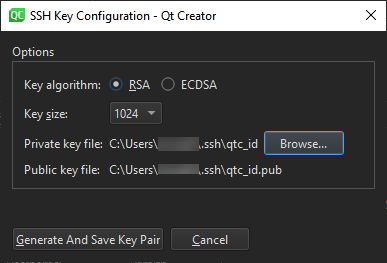

Generate SSH keys
To protect the connections between Qt Creator and a device, use OpenSSH.
If you do not have an SSH public and private key pair, you can generate it in Qt Creator. The connection wizard can create the key pair for you, or you can create it separately.
You can specify key length and the key algorithm, RSA or ECDSA. If you only use the keys to protect connections to the emulator or device, you can use the default values.
- Go to Preferences > Devices > Devices
- Select Create New.

- In Private key file, select the location to save the private key. Public key file displays the location to save the corresponding public key.
- Select Generate And Save Key Pair to generate and save the keys at the specified locations.
See also How To: Develop for remote Linux and Developing for remote Linux devices.